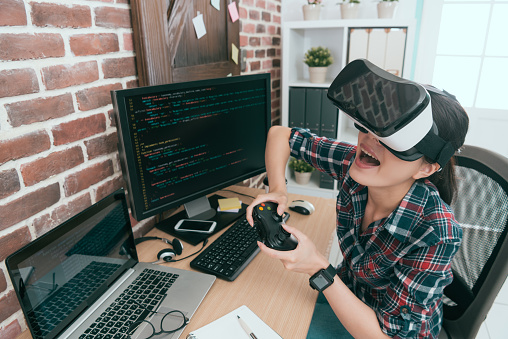

Game developers work on teams to plan, design, and produce video games for computers, mobile devices, or game consoles. Their work involves creating visual content for the game and writing code to implement all the game’s features and functionality. This career requires a background in software development and mathematics and the ability to collaborate well with others to accomplish project goals. While many work full-time hours in game studios or at software companies, opportunities exist for game developers who prefer to work remotely or to self-publish their games online as independent developers.
|  |
Game developers work in a variety of organizations. Specific duties and responsibilities may vary, but there are several core tasks associated with the job, including:
After receiving the game’s specifications and feature requests, game developers plan its storyline, characters, environment, activities, scoring, and progression. They break the project down into smaller parts for the team to handle, create schedules with estimated timelines, set milestones, and create prototypes.
Often coordinating with dedicated visual designers, game developers use computer applications to make 2D and 3D models of game assets, including scenery and characters. They also create graphics for game art and maps. This includes animating the characters and designing any virtual reality environments used.
Using programming languages suitable for the game’s target platform, game developers write the code that implements the game’s logic and allows the player to interact with the game world and its characters. This often involves having responsibility for specific parts of the code or game features and working with other developers to make the final product.
Testing and debugging occur during the development process and after the game ships to players. Game developers use their eye for detail and automated testing tools to check for broken features and functionality, inspect their code for errors as they write it, and handle requests to fix performance and reliability issues.
After production, game developers continue to handle new feature requests and make improvements to the game. This can include producing add-ons and game packs, making updates that introduce new levels and characters, and adding online gameplay functionality.
Game developers need creativity, artistic ability, and technical skills to make interesting games that look and run well. Employers often require them to have a bachelor’s degree in a computer science field and up to five years of experience in game programming, game design, or software development. Strong candidates usually also possess these skills:
Monique: "I was always a gamer but never really thought about creating one myself. I had played around online with some free software and realised that I really enjoyed it. I applied to college then went on to University where I got my degree. I have now been working in the industry for four years and absolutely love my job."